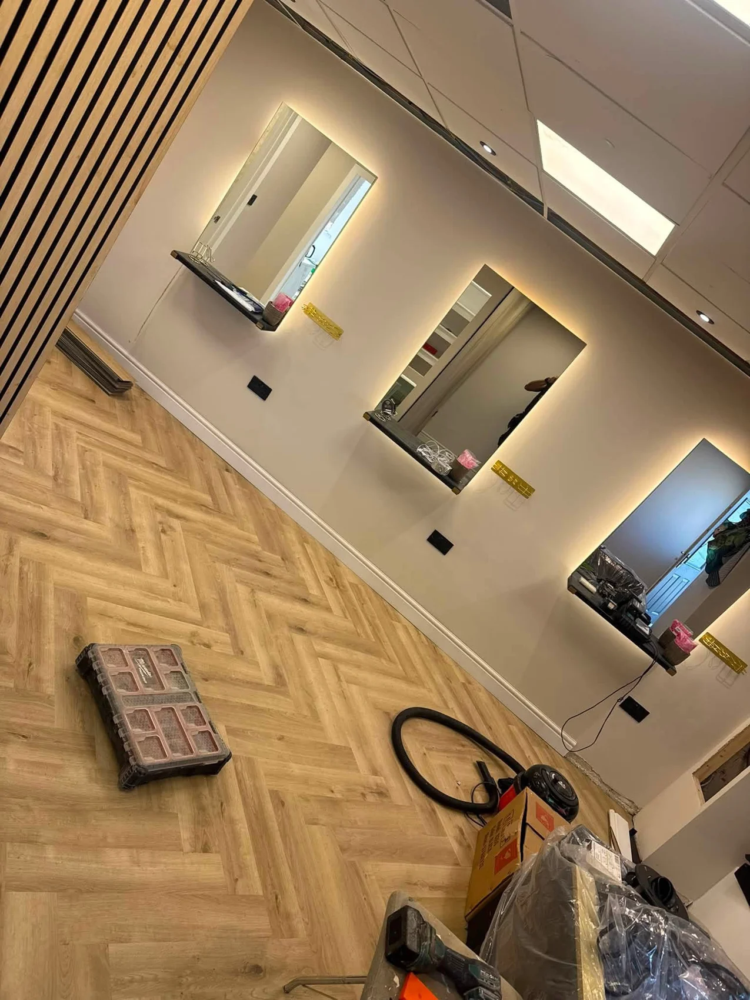
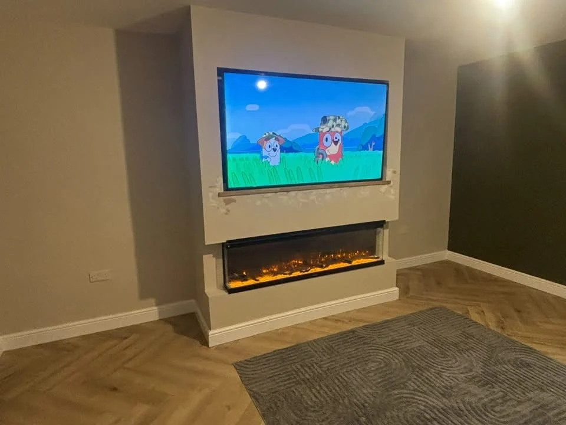
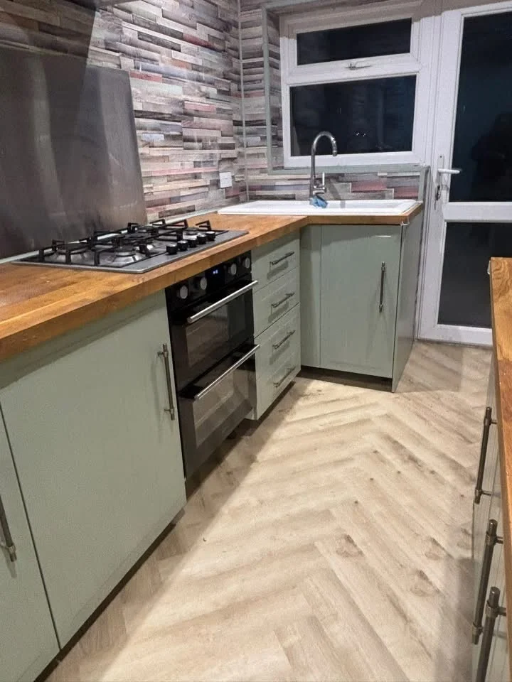

BENNETT ALL TRADES · WIDNES
Build. Improve.
Maintain.
Handyman services, home improvements and maintenance in Widnes. Big jobs, small jobs and the details that finish a room.
Priced per jobWidnes · WA8
BENNETT ALL TRADES
Your home.
Your jobs, sorted.
Based in Widnes, Bennett All Trades takes enquiries for home improvements, handyman jobs and general maintenance, for domestic and commercial properties.
From a shelf that needs fitting to a room ready for a new look, start with the work you need. Browse our project photographs and send us your list.
Explore handyman services →

PRICED BY THE JOB
A clear job.
A clear price.
Jobs are priced per job, rather than by the hour or day. We discuss the work and agree the price before starting, so you know what is included.
Tell us what needs doing →

STAIRCASE PROJECT
A different look.
From the first step.
The original trim during removal, followed by new timber handrails and black balusters. Floor protection remains in place during the work.

OUR PROJECTS
Real work. Around real homes.
Explore interior improvements, carpentry and practical finishing details.
GOOD TO KNOW
Before you get in touch.
Where are you based?
We are based in Widnes, WA8. Include your postcode so we can confirm availability for your property.
Do you charge by the hour?
Our handyman jobs are priced per job, rather than by the hour or day. We agree the scope and price before work starts.
Can I send a list of small jobs?
Yes. Include your list, photographs and any measurements you have. Tell us if you already have fittings, shelves or flat-pack furniture ready.
Do you work in commercial properties?
Yes. We welcome domestic and commercial enquiries. Share the work required and any access or timing restrictions.
PROJECT VIDEOS
See the work in motion.
A closer look at a kitchen finish and interior renovation in progress.
PROJECT ENQUIRY
Let’s talk about your next job.
Tell us what you have in mind. This form opens a WhatsApp draft with all your details, ready for you to review, add photos and send.